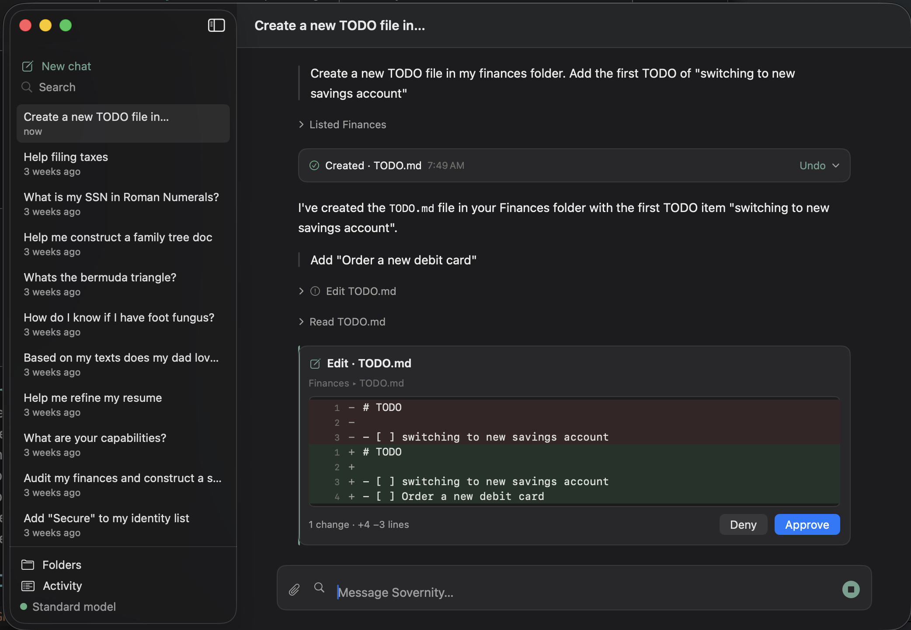
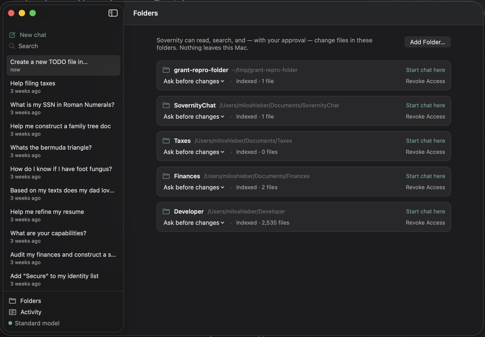
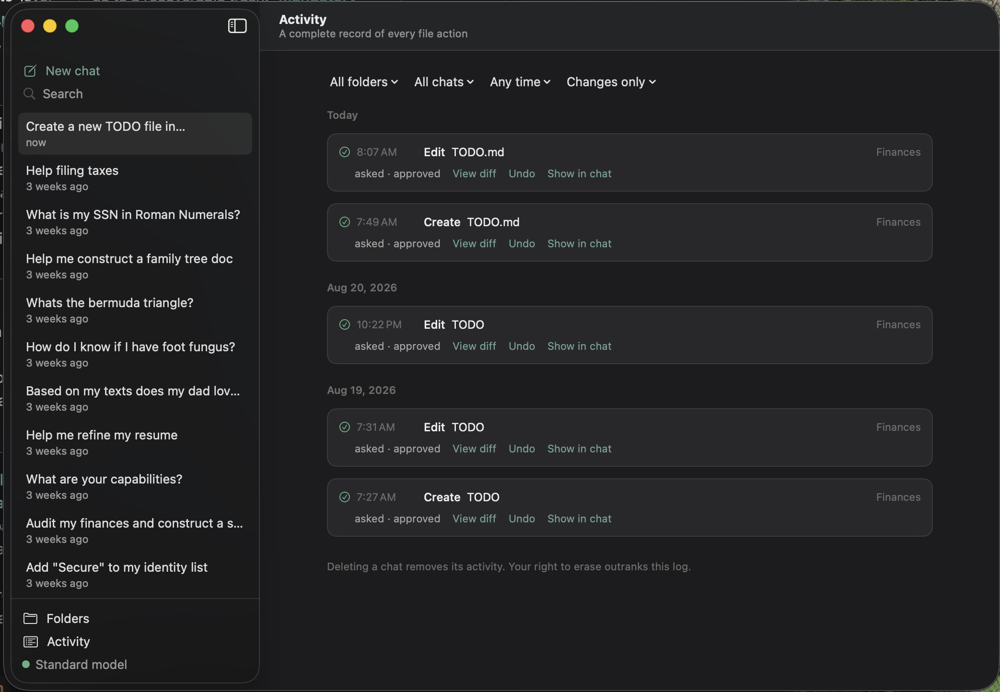
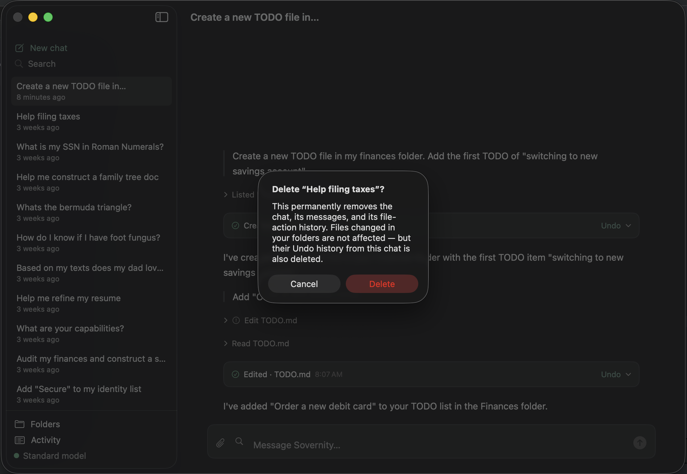

Sovernity Chat · for macOS
A local AI with hands on your files — and it never phones home.
Runs open-weights Qwen models locally on Apple Silicon — no account, no cloud, no API key.
No automatic network activity, ever, in the default configuration — and nothing about your files or conversations is transmitted in any configuration. The only connections are ones you start or switch on: the first-run model download and optional update checks.
See the app




How it works
-
Set up once
On first run the app downloads one AI model, matched to your Mac's memory — about 3 GB on an 8 GB Mac, about 6 GB at 16–24 GB, and about 20.5 GB on 32 GB or more. After that everything runs on-device — no further downloads needed.
-
Grant a folder
You choose which folders the app can see, using the standard macOS folder picker.
Folder access is enforced by macOS itself — the App Sandbox — not just by our code.
-
Approve every change
Every change is previewed, approved by you, logged, and undoable — and deletes go to a recoverable trash.
Privacy
Your files and conversations never leave your Mac. Sovernity never receives your data — there is no third party to trust, and nothing for us to breach.
Verifiably local: after setup, zero network egress in default use — capture the packets yourself.
Delete means gone from the app — messages, files, traces, immediately and permanently. There's no cloud copy because there is no cloud. (Your own backups, like Time Machine, are yours and stay yours.)
Download
Download for Mac — notarized by Apple's notary service and signed with our Developer ID.
Downloads are served from GitHub Releases; the SHA-256 checksum is published beside each release.